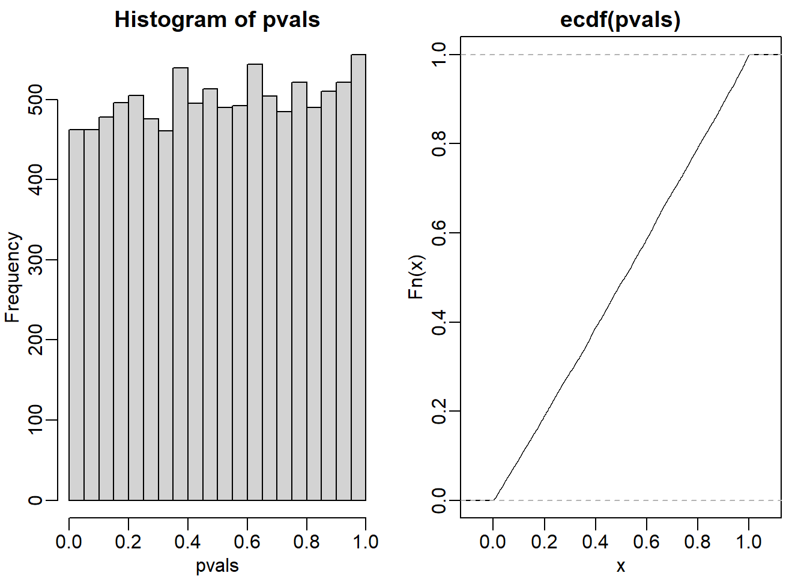

Chapter 6 Inference for High Dimensional Data
Note: I have rephrased some parts of the questions for clarity. These changes are bolded. Due to the random numbers, the exact values of the answers, despite the same seeds, might differ. So please be mindful of that.
First, upload necessary package(s).
library(dplyr) # uplaods the function filter() and %>%
library(rafalib) # important for plotting with base R
library(genefilter) # rowttests
#library(devtools) # allows download from github
library(qvalue) # conversion from p values to q values
library(GSE5859Subset) # subset of gene expression data6.2 Exercises
library(GSE5859Subset)
data(GSE5859Subset)This package loads three tables: geneAnnotation, geneExpression, and sampleInfo. Answer the following questions to familiarize yourself with the data set:
Question 1
How many samples were processed on 2005-06-27?
length(which(sampleInfo$date == '2005-06-27'))## [1] 5Questions 2
How many of the genes represented in this particular technology are on chromosome Y?
length(which(geneAnnotation$CHR == 'chrY'))## [1] 21Question 3
What is the value of the gene ARPC1A on the one subject that we measured on 2005-06-10?
subj <- sampleInfo[which(sampleInfo$date == '2005-06-10'),]$filename
probe <- geneAnnotation[which(geneAnnotation$SYMBOL == 'ARPC1A'),]$PROBEID
geneExpression[probe,subj]## [1] 8.2335996.4 Exercises
set.seed(1)
population = read.csv('femaleControlsPopulation.csv')
pvals <- replicate(1000,{
control = sample(population[,1],12)
treatment = sample(population[,1],12)
t.test(treatment,control)$p.val
})
head(pvals)## [1] 0.9758457 0.4723582 0.2068672 0.7023475 0.9407852 0.0723841hist(pvals)Question 1
What proportion of the p-values is below 0.05?
mean(pvals<0.05)## [1] 0.041Question 2
What proportion of the p-values is below 0.01?
mean(pvals<0.01)## [1] 0.008Question 3
Assume you are testing the effectiveness of 20 diets on mice weight. For each of the 20 diets, you run an experiment with 10 control mice and 10 treated mice. Assume the null hypothesis, that the diet has no effect, is true for all 20 diets and that mice weights follow a normal distribution, with mean 30 grams and a standard deviation of 2 grams. Run a Monte Carlo simulation for one of these studies:
cases = rnorm(10,30,2)
controls = rnorm(10,30,2)
t.test(cases,controls)##
## Welch Two Sample t-test
##
## data: cases and controls
## t = 0.16473, df = 17.934, p-value = 0.871
## alternative hypothesis: true difference in means is not equal to 0
## 95 percent confidence interval:
## -1.708669 1.999327
## sample estimates:
## mean of x mean of y
## 30.23172 30.08639Now run a Monte Carlo simulation imitating the results for the experiment for all 20 diets. If you set the seed at 100, set.seed(100), how many of p-values are below 0.05?
set.seed(100)
randomData <- matrix(rnorm(20*20,30,2),20,20)
g <- c(rep(0,10),rep(1,10))
pvals <- rowttests(randomData, factor(g))$p.value
sum(pvals<0.05)## [1] 1Question 4
Now create a simulation to learn about the distribution of the number of p-values that are less than 0.05. In question 3, we ran the 20 diet experiment once. Now we will run the experiment 1,000 times and each time save the number of p-values that are less than 0.05.
Set the seed at 100, set.seed(100), run the code from Question 3 1,000 times, and save the number of times the p-value is less than 0.05 for each of the 1,000 instances. What is the average of these numbers? This is the expected number of tests (out of the 20 we run) that we will reject when the null is true.
set.seed(100)
res <- replicate(1000, {
randomData <- matrix(rnorm(20*20,30,2),20,20)
pvals <- rowttests(randomData, factor(g))$p.value
return(sum(pvals<0.05)) # total number of false positives per replication
})
mean(res)## [1] 0.999Question 5
What this says is that on average, we expect some p-value to be 0.05 even when the null is true for all diets. Use the same simulation data and report for what percent of the 1,000 replications did we make more than 0 false positives?
mean(res>0)## [1] 0.6516.10 Exercises
Question 1
Assume the null is true and denote the p-value you would get if you ran a test as P. Define the function \(f(x) = Pr(P>x)\). What does \(f(x)\) look like?
The answer is B (identity line). When the null hypothesis is true, p value has a uniform distribution. If you plot a cumulative distribution function, where the y-axis is f(x), then you will observe an identity line. Here is a demonstration using ecdf function to plot a cumulative distribution function.
population <- read.csv('femaleControlsPopulation.csv') %>% unlist()
set.seed(1)
N <- 12
B <- 10000
pvals <- replicate(B,{
control = sample(population,N)
treatment = sample(population,N)
t.test(treatment,control)$p.val
})
mypar(1,2)
hist(pvals)
plot(ecdf(pvals)) # identity line
Question 2
In the previous exercises, we saw how the probability of incorrectly rejecting the null for at least one of 20 experiments for which the null is true, is well over 5%. Now lets consider a case in which we run thousands of tests, as we would do in a high-throughput experiment.
We previously learned that under the null, the probability of a p-value \(< p\) is p.If we run 8,793 independent tests, what it the probability of incorrectly rejecting at least one of the null hypotheses?
1 - 0.95^8793## [1] 1Question 3
Suppose we need to run 8,793 statistical tests and we want to make the probability of a mistake very small, say 5%. Use the answer to exercise 2 (Sidaks procedure) to determine how small we have to change the cutoff, previously 0.05, to lower our probability of at least one mistake to be 5%.
m <- 8793
1 - 0.95^(1/m)## [1] 5.833407e-06Question 4
In R define
alphas <- seq(0,0.25,0.01)Make a plot of \(\alpha/m\) and \(1-(1-\alpha)^{1/m}\) for various values of \(m>1\). Which procedure is more conservative Bonferrinos or Sideks?
plot(alphas/m, (1-(1-alphas)^(1/m)), xlab = 'bonf',
ylab = 'sidak', main = 'p-val cutoff')
abline(0,1)Bonferronis procedure is more conservative (choice B). Conservative refers to strictness. The p-value cutoff for significance is lower in Bonferronis procedure, and therefore more conservative.
Question 5
To simulate the p-value results of, say 8,793 t-tests for which the null is true, we dont actually have to generate the original data. We can generate p-values for a uniform distribution like this: pvals <- runif(8793,0,1). Using what we have learned, set the cutoff using the Bonferroni correction and report back the FWER. Set the seed at 1 and run 10,000 simulations.
set.seed(1)
bonf_res <- replicate(10000, {
pvals <- runif(8793,0,1)
bonfcall <- sum((pvals * m) < 0.05)
return(bonfcall)
})
sum(bonf_res>0)/length(bonf_res)## [1] 0.0464Question 6
Using the same seed, repeat exercise 5, but for Sideks cutoff.
set.seed(1)
sidak_res <- replicate(10000, {
pvals <- runif(8793,0,1)
sidakcall <- sum((1-(1-pvals)^m) < 0.05)
return(sidakcall)
})
sum(sidak_res>0)/length(sidak_res)## [1] 0.0473Question 7
In the following exercises, we will define error controlling procedures for experimental data. We will make a list of genes based on q-values. We will also assess your understanding of false positives rates and false negative rates by asking you to create a Monte Carlo simulation. Load the expression data:
library(GSE5859Subset)
data(GSE5859Subset)We are interested in comparing gene expression between the two groups defined in the sampleInfo table. Compute a p-value for each gene using the function rowttests from the genefilter package.
library(genefilter)
#?rowttestsHow many genes have p-values smaller than 0.05?
g <- sampleInfo$group
pvals <- rowttests(geneExpression, factor(g))$p.value
sum(pvals < 0.05)## [1] 1383Question 8
Apply the Bonferroni correction to achieve a FWER of 0.05. How many genes are called significant under this procedure?
m <- 8793
sum(pvals < (0.05/m))## [1] 10Question 9
In R, we can compute q-values using the p.adjust function with the FDR option. Read the help file for p.adjust and compute how many genes achieve a q-value < 0.05 for our
gene expression dataset.
pvals_adjust <- p.adjust(pvals, method = 'fdr')
sum(pvals_adjust < 0.05)## [1] 13Question 10
Now use the qvalue function, in the Bioconductor qvalue package, to estimate q-values using the procedure described by Storey. How many genes have q-values below 0.05?
res <- qvalue(pvals)
sum(res$qvalues < 0.05)## [1] 22Question 11
Read the help file for qvalue and report the estimated proportion of genes for which the null hypothesis is true \(\pi_0 = m_0/m\)
res$pi0## [1] 0.6695739Question 12
The number of genes passing the q-value < 0.05 threshold is larger with the q-value function than the p.adjust difference. Why is this the case? Make a plot of
the ratio of these two estimates to help answer the question.
plot(pvals_adjust, res$qvalues, xlab = 'fdr', ylab = 'qval')
abline(0,1)
The qvalue function estimates the proportion of genes for which the null hypothesis is true and provides a less conservative estimate (choice C).
Questions 13 & 14
This exercise and the remaining one are more advanced. Create a Monte Carlo simulation in which you simulate measurements from 8,793 genes for 24 samples, 12 cases and 12 controls. For 500 genes, create a difierence of 1 between cases and controls. You can use the code provided below. Run this experiment 1,000 times with a Monte Carlo simulation. For each instance, compute p-values using a t-test and keep track of the number of false positives and false negatives. Compute the false positive rate and false negative rate if we use Bonferroni, q-values from p.adjust, and q-values from qvalue function. Set the seed to 1 for all three
simulations. What are the false positive and false negative rates for Bonferroni? Note: False positive rate = number of false positives / total number of genes for which the null hypothesis is true. False negative rate = number of false negatives / total number of genes for which the null hypothesis is false.
n <- 24
m <- 8793
mat <- matrix(rnorm(n*m),m,n)
delta <- 1
positives <- 500
mat[1:positives,1:(n/2)] <- mat[1:positives,1:(n/2)]+deltag <- c(rep(0,12),rep(1,12))
m <- 8793
B <- 1000
m1 <- 500
N <- 12
m0 <- m-m1
nullHypothesis <- c(rep(TRUE,m0),rep(FALSE,m1))
delta <- 1
set.seed(1)
res <- replicate(B, {
controls <- matrix(rnorm(N*m),nrow = m, ncol = N)
treatment <- matrix(rnorm(N*m),nrow = m, ncol = N)
treatment[!nullHypothesis,] <-
treatment[!nullHypothesis,] + delta
dat <- cbind(controls, treatment)
pvals <- rowttests(dat, factor(g))$p.value
calls <- pvals < (0.05/m)
R <- sum(calls)
V <- sum(nullHypothesis & calls)
fp <- sum(nullHypothesis & calls)/m0 # false positive
fn <- sum(!nullHypothesis & !calls)/m1 # false negative
return(c(fp,fn))
})
res<-t(res)
head(res)## [,1] [,2]
## [1,] 0.0000000000 0.998
## [2,] 0.0000000000 0.998
## [3,] 0.0000000000 0.992
## [4,] 0.0001205836 0.996
## [5,] 0.0000000000 0.992
## [6,] 0.0000000000 0.994mean(res[,1]) # false positive rate## [1] 5.185096e-06mean(res[,2]) # false negative rate## [1] 0.995206Questions 15 & 16
What are the false positive and negative rates for p.adjust?
g <- c(rep(0,12),rep(1,12))
m <- 8793
B <- 1000
m1 <- 500
N <- 12
m0 <- m-m1
nullHypothesis <- c(rep(TRUE,m0),rep(FALSE,m1))
delta <- 1
set.seed(1)
res <- replicate(B, {
controls <- matrix(rnorm(N*m),nrow = m, ncol = N)
treatment <- matrix(rnorm(N*m),nrow = m, ncol = N)
treatment[!nullHypothesis,] <-
treatment[!nullHypothesis,] + delta
dat <- cbind(controls, treatment)
pvals <- rowttests(dat, factor(g))$p.value
pvals_adjust <- p.adjust(pvals, method = 'fdr')
calls <- pvals_adjust < 0.05
R <- sum(calls)
V <- sum(nullHypothesis & calls)
fp <- sum(nullHypothesis & calls)/m0 # false positive
fn <- sum(!nullHypothesis & !calls)/m1 # false negative
return(c(fp,fn))
})
res<-t(res)
head(res)## [,1] [,2]
## [1,] 0.0000000000 0.992
## [2,] 0.0002411672 0.966
## [3,] 0.0000000000 0.968
## [4,] 0.0002411672 0.950
## [5,] 0.0000000000 0.964
## [6,] 0.0000000000 0.944mean(res[,1]) # false positive rate## [1] 0.0001201013mean(res[,2]) # false negative rate## [1] 0.962686Questions 17 & 18
What are the false positive and negative rates for qvalues?
g <- c(rep(0,12),rep(1,12))
m <- 8793
B <- 1000
m1 <- 500
N <- 12
m0 <- m-m1
nullHypothesis <- c(rep(TRUE,m0),rep(FALSE,m1))
delta <- 1
set.seed(1)
res <- replicate(B, {
controls <- matrix(rnorm(N*m),nrow = m, ncol = N)
treatment <- matrix(rnorm(N*m),nrow = m, ncol = N)
treatment[!nullHypothesis,] <-
treatment[!nullHypothesis,] + delta
dat <- cbind(controls, treatment)
pvals <- rowttests(dat, factor(g))$p.value
qvals <- qvalue(pvals)$qvalue
calls <- qvals < 0.05
R <- sum(calls)
V <- sum(nullHypothesis & calls)
fp <- sum(nullHypothesis & calls)/m0 # false positive
fn <- sum(!nullHypothesis & !calls)/m1 # false negative
return(c(fp,fn))
})
res<-t(res)
head(res)## [,1] [,2]
## [1,] 0.0000000000 0.988
## [2,] 0.0002411672 0.966
## [3,] 0.0000000000 0.950
## [4,] 0.0002411672 0.950
## [5,] 0.0000000000 0.964
## [6,] 0.0000000000 0.942mean(res[,1]) # false positive rate## [1] 0.0001387918mean(res[,2]) # false negative rate## [1] 0.958946.12 Exercises
library(rafalib)
library(SpikeInSubset)
data(mas133)Now make the following plot of the first two samples and compute the correlation:
e <- exprs(mas133)
plot(e[,1],e[,2],main=paste0("corr=",signif(cor(e[,1],e[,2]),3)), cex=0.5)
k <- 3000
b <- 1000 #a buffer
polygon(c(-b,k,k,-b),c(-b,-b,k,k),col="red",density=0,border="red")Question 1
What proportion of the points are inside the box?
length(which(e[,1] <= 3000 & e[,2]<= 3000)) / dim(e)[1]## [1] 0.9475336sum(e[,1] <= 3000 & e[,2] <= 3000) / dim(e)[1]## [1] 0.9475336Question 2
Now make the sample plot with log:
plot(log2(e[,1]),log2(e[,2]))
k <- log2(3000)
b <- log2(0.5)
polygon(c(b,k,k,b),c(b,b,k,k),col="red",density=0,border="red")What is an advantage of taking the log?
The answer choice is A: The tails do not dominate the plot, 95% of data are not in a tiny section of the plot.
Question 3
Make an MA-plot:
e <- log2(exprs(mas133))
plot((e[,1]+e[,2])/2,e[,2]-e[,1],cex=0.5)
The two samples we are plotting are replicates (they are random samples from the same batch of RNA). The correlation of the data was 0.997 in the original scale and 0.96 in the log-scale. High correlations are sometimes confused with evidence of replication. However, replication implies we get very small differences between the observations, which is better measured with distance or differences.
What is the standard deviation of the log ratios for this comparison?
e <- log2(exprs(mas133))
plot((e[,1]+e[,2])/2,e[,2]-e[,1],cex=0.5)
sd(e[,2]-e[,1])## [1] 0.7767887Question 4
How many fold changes above absolute 2 do we see?
sum(abs(e[,2]-e[,1])>1)## [1] 3057